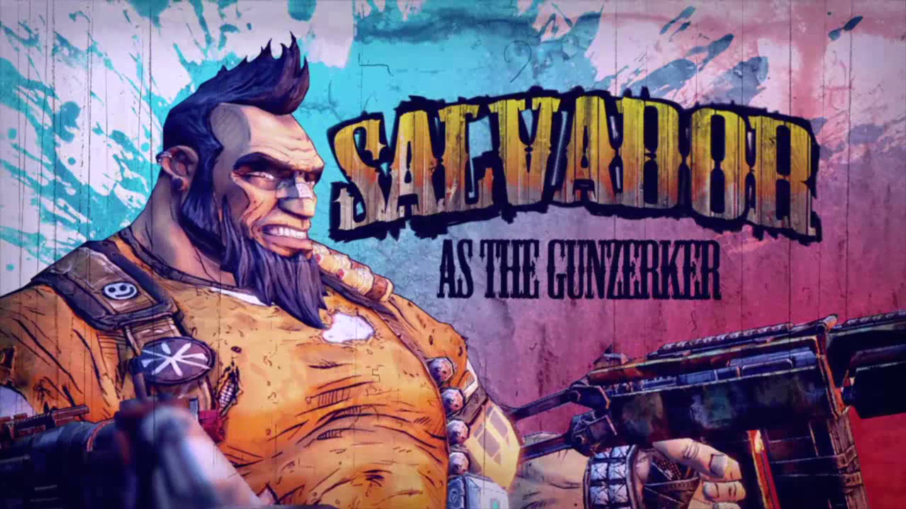

Playable Characters
In Borderlands 2 you have four basic playable characters and two extra DLC characters to pick from. Axton the Commando, Maya the Siren, Salvador the Gunzerker, and Zer0 the Assassin are the base classes. Gaige the Mechromancer and Kreig the Psycho are the DLC classes. Any class can use any weapon in the game, but they each have their own special skills and abilities that favor certain weapon types over others. Each class is heavily customizable while still retaining their core gameplay patterns.
Gunzerker
Salvador is a high damage, high survivability unit. His active ability, Gunzerking, allows him to dual weild any two guns in the game. His talents allow him to take two routes the increase his damage based on what kind of combat he wants to specialize in, and one route that increases his toughness and ability to tank damage. While tanky, he is not restricted to close range combat, since his Gunzerking skill actually favors weapons with high rates of fire to make best use of the dual wielding.
Siren
Maya is a Siren similar to Lilith from the first game, but with a very different playstyle and set of abilities. Maya's active ability is Phaselock. Phaselock suspends an enemy in an alternate dimension, making them unable to fight or even move for a short period of time. With certain upgrades, Phaselock can even cause damage to the enemy caught within. Maya's talents also offer her a way to increase her damage, but her some of her best play patterns involve maximizing her crowd control abilities with Phaselock. She also has a set of talents focused on defence, but it's more for extra survivability, unlike Salvador who can become a damage soak.
Assassin
Zer0 is character that can specialize in both close range and long range assassinations. His active ability, Decepti0n, allows him to become stealthed for a short period of time. Entering stealth leaves a decoy of himself behind. As he remains stealthed, he gains a stacking damage buff on his next attack. The longer his stealth lasts, the greater the damage, but the ability also goes on a longer cool down. If he exits stealth quickly, he gets a smaller damage buff but also a shorter cool down. His talent trees give him three very different options for playstyle. One tree enhances his ability to kill thinks from short range with his sword. One tree enhances his sniper capabilities, turning him into a long range unit. The final tree is various utilities and damage increases for a less specialized playstyle.
Commando
Axton is a spiritual successor to Roland, the Soldier from Borderlands 1. However, he focuses mostly on damage, unlike Roland who had many support abilities. Axton's active ability is Dahl Sabre Turret. He deploys a high damage turret to a target location. Axton's talents allow him to be right in the middle of the fight, with two trees providing defensive bonuses and extra survivability. His third spec is a long range fighter, but due to the nature of his turret is is the weakest of his three options. The turret is also a large part of Axton's damage, with many of his talents allowing him to modify it in many different ways. From explosive rounds to a second turret, it is the most versatile of the active abilities.
Mechromancer
Gaige is a high risk, high reward damage unit. Her active ability, Deathtrap, summons a large robot named Deathtrap to fight her enemies. Deathtrap can take a lot of damage and will pull enemy fire to him while he is active, making him a valuable asset in Gaige's arsenal. Like other damage focused units, she has two damage talent trees and one tree that offers extra survivability. The first damage tree focuses on increasing her elemental damage. This tree works best when using an elemental weapon, but it isn't required. The other tree is best described with its name, Ordered Chaos. As Gaige kills enemies and empties weapon clips, she gains stacks of Anarchy. Anarchy increases her damage, but reduces her accuracy per stack, and it can stack up to 600 times when fully invested into through talents and class mods. She also can take talents that give her health for killing enemies and faster reload times. Her last tree focuses more on powering up Deathtrap and keeping herself alive while he does most of the work.
Psycho
Kreig is class all to his own. Heavily melee focused for all his skill trees, Kreig's active ability is Buzz Axe Rampage. He puts away his weapon and pulls out a two handed Buzz Axe. Melee damage is increased and health is restored for every unit he kills during it's duration. His talent trees are all damage focused. One revolves around a stacking mechanic called Bloodlust, with enhances his skills and increases his damage based on stacks. The second tree is heavily melee focused and allows him to transform into a Mutant Badass Psycho for even more damage. His final tree is based around fire damage and gives him bonus defences if he sets himself on fire.